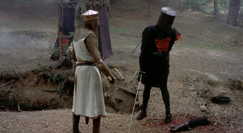
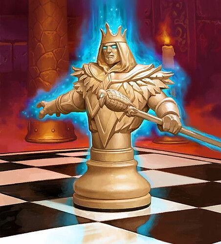
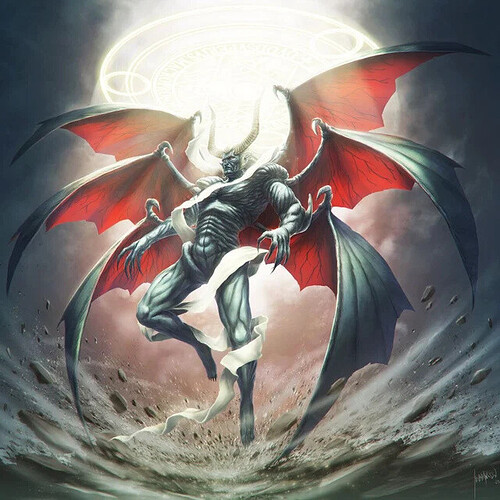
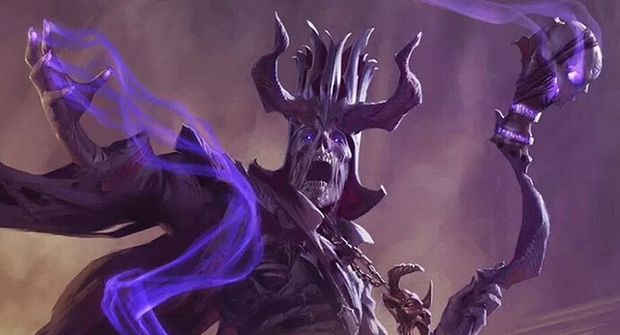

Flips
Geyde:
The Black Knight
Black Black Knight
Tis but a scratch (Passive) - You have way too much confidence. We’re talking actually unhealthy amounts. Dude, your arm just blown off. Why are you still trying to ITA me?
Self-Resolving (Day) - Reveal yourself as The Black Knight . - 2 Uses
None Shall Pass! (Night) - You will guard the target player tonight, giving your life to kill their attacker(s) - Infinite UsesCold Steel (Night) - Choose a player to attack. If you kill them and they are a member of the Blue Dragon, you will commit suicide. - Infinite Uses, Usable n3 onwards
Defeat all scum present in the game.
Geyde:
White King

“You thought I had forgotten. You thought I had forgiven. It’s HEARTHSTONE AGAIN BABY.” White Priest Interesting Maneuver (Passive) - If the player above you on the playerlist kills the player 3 spaces above you on the playerlist on n1, then you leave the game victorious.RNG RNG RNG (Passive) - You will discover a spell each day.
Lightning Bloom [SPELL] (Day) - Activate 3 different abilities you have simultaneously. Resolves instantly. - 1 UseTime Warp [SPELL] (Day) - Summon an alt account that is confirmed to not be aligned with the uninformed majority. It will shoot a player of your choice if nobody is killed during that day. - 1 UseUltimate Infestation [SPELL] (Day) - Lock a player’s abilities behind a paywall. - 2 UsesDeadly Shot [SPELL] (Day) - Kill a player present in the game - 1 Use
Castle (Night) - Change the placing of 10 different players on the playerlist. This will impact all actions on those players. - 3 Uses
Defeat all scum present in the game.
Geyde:
Cantaloupe is…
Mafia Abomination Rise Up (Day) - Reveal yourself as a member of the Mafia. - 1 UseRise Up (Day) - Reveal yourself as a member of the Mafia. - 1 UseRise Up (Day) - Reveal yourself as a member of the Mafia. - 1 UseRise Up (Day) - Reveal yourself as a member of the Mafia. - 1 UseRise Up (Day) - Reveal yourself as a member of the Mafia. - 1 UseRise Up (Day) - Reveal yourself as a member of the Mafia. - 1 UseRise Up (Day) - Reveal yourself as a member of the Mafia. - 1 UseRise Up (Day) - Reveal yourself as a member of the Mafia. - 1 UseRise Up (Day) - Reveal yourself as a member of the Mafia. - 1 UseRise Up (Day) - Reveal yourself as a member of the Mafia. - 1 UseRise Up (Day) - Reveal yourself as a member of the Mafia. - 1 UseRise Up (Day) - Reveal yourself as a member of the Mafia. - 1 UseRise Up (Day) - Reveal yourself as a member of the Mafia. - 1 UseRise Up (Day) - Reveal yourself as a member of the Mafia. - 1 UseRise Up (Day) - Reveal yourself as a member of the Mafia. - 1 Use
JOY (Night) - Remove a player from their rolecard until the start of the phase. - Infinite UsesJOY (Night) - You cannot be executed the following day. - Infinite UsesJOY (Night) - Malform a player’s ability tonight - Infinite UsesJOY (Night) - Increase your vote power by 3 against players who have claimed a strong power role. Permanently. - Infinite UsesJOY (Night) - Forcibly replace a player with an alt. Can self target. - Infinite Uses
BOX IN ALL SCUM (or just in general have them all dead).
Geyde:
Emilia has died permanently.
They were
Confucius
Enlightened Centrist Political JOAT Confucianism (Passive) - You are the Political Leader of the “Enlightened Ones” political group. You have a private chat with anyone who likes 30 or more of your posts during the game. Once during the game, you may post I AM THE GOLDEN GOD in thread.
Rén [SPELL] (Day) - Protect all players belonging to your political group from kills and similar effects today and tonight. - 2 UsesSìzì (Day) - Choose one of the following actions to take place. Can only target people from different political groups, and can only be used once each:
Zhōng - Force a player to secretly join your political group. They will be locked in it for the rest of the game.Xiào - The targeted player cannot attack anyone from their political group tonight.Jié - If you die tonight, the chosen player will inherit your roleYì - Determine the win condition of a player provided they are a political leader.
Defeat all scum present in the game.
Geyde:
Blizer has died…
Jet Eriksen
Radical Sandwich Anarchists Strawmanner
Bit the Onion (Passive) - Every day, following the first, there will be an “ITA” session activated, requiring all people signing up to declare their political alignment on n1 (they will be informed of political groups d1). Anybody who joins yours (Homosexual Infant Penitentiary) will be sent to GBJ. You have russian hackers fucking with Ben Shapiro in order to slightly fuck up votecounts. If any player mentions how the votecount is wrong, they will be sent to GBJ. . At the start of the game, it will be publicly informed that “Akodo is watching your every step, from all clans alike”. Anybody who tries to solve based on the assumption of “The Lying Darkness” being present in the game will be sent to GBJ. The first player to self vote will be confirmed to not be aligned with the Mafia. The first player to AtE after a self vote will be confirmed to not be a member of the Mafia. Second player onward for each will be sent to GBJ. If you are boxed in, then the player below you on the playerlist will be sent to GBJ. If the player above you on the playerlist claims, they will be informed that they are a looser. You are the GBJ Warden, and have an alt account associated with this. Don’t claim this.
Gail Baby Jail (Night) - Jailkeep a player in GBJ - Infinite Uses
Defeat all scum present in the game.
Geyde:
Icibalus was…
Lucifer

Mafia Godfather "𝔗𝔥𝔢 𝔊𝔬𝔡 𝔜𝔬𝔲 𝔚𝔬𝔯𝔰𝔥𝔦𝔭 ℑ𝔰 𝔇𝔢𝔞𝔡" (Passive) - You have access to the following effects:
You are the leader of the Chaos political group.
All members of the Mafia have 5% ITA dodge and 5% bonus ITA hit%
[REDACTED]
You have control of the Mot alt, which is confirmed to be aligned with the informed minority. It gains an additional ITA shot each day that it is left alive.
You will learn one rolecard that is present in the game every night, including n0.
You may make one private chat with anyone you want once during the game.
Your abilities get empowered if the other one dies.
You can make a player into a fiend once per cycle.
Root of Evil [SPELL] (Day) - Inflicts random effects on all players not aligned with the Chaos political group. Only usable after ITAs open for the first time. - 2 UsesDiarhan [SPELL] (Day) - Protect a player from daykills today. If they are town, they will be given an offer to receive a bp. If they accept, you will learn their role and they will be inflicted with Shadow Corruption (and gain the bp). - 1 UseI AM THE BUG INSIDE YOU (Day) - Summon the alt [REDACTED], which will infiltrate the rolecard of a chosen player. This will strengthen their abilities, but will cause them to instantly die if they are shot by Mot. They will be able to level up over time and learn new abilities if they kill players by any means. - 1 Use
High King (Night) - Roleblock 2 players. If targeting other scum, this will work as a jailkeep instead. - Infinite Uses
Overpower all opposing forces.
Geyde:
Gorta was…
Maya Fey
Democrat Ouija Whisperer
Medium (Passive) - Every night, you may speak to Spec Chat. They will give vague and in general weird ass information.Channel Spirits (Day) - Summon Jean Valjean, an alt controlled by Spec Chat. The world may not be ready for this. - 1 Use
Resurrection (Night) - Return a player from the dead. Now, the game might think that you’re a wolf because of this. They are rightfully concerned. You won’t claim to do this until the late game, because you expect this to do something like convert them into being a wolf. Just so you know, I know exactly what will happen. I’ve set this role up in such a way that you’ll be fucked no matter what you try to do since every ability is carefully worded so that it’ll backfire. But I knew that you knew that I’d think about this, so I deliberately would have no associated effects just to fuck with you. But I would know that you knew that I’d know about how you knew about how I knew, so I make this ability do something completely unrelated to the text used in this passage. HAH - 1 UseLuigi Board (Night) - Ask a question about the preflip setup. - Infinite Uses
Defeat all scum present in the game.
Geyde:
Small_Tank has died (and they won the event but rip)
The Remainder of our Originality
Balance Panel Power Vacuum Balance Panel (Passive) - You have a private chat with other members of the Balance Panel. Any attempt to leak info from or speculate about the chat from any player is strictly prohibited.Totally a Phoenix Wright character (Passive) - You get a copy of the autopsy report upon a player dying.Kunaigeddon (Passive) - If 2 vig roles have died this game, you will become the Ultimate Kunoichi. You count as female for the purposes of any abilities.
Can the Game (Day) - Disable any events that are currently ongoing. The flavor for the ending of the event will be canned due to inactivity. - 2 UsesThe Man behind the Slaughter (Day) - Turn a player purple. - 1 Use
Vent (Night) - Go into a vent, making yourself bulletproof. If you are visited by a member of the uninformed majority, you will die. - Infinite Uses
Ensure that all threats to the Balance Panel are extinguished.
Geyde:
ArcticXI has died
Rodin
Angle Trapped God True Form (Passive) - If you accumulate enough dollars, you will transform into your true form and rain down destruction on this pitiful world. Or something like that.Capitalism (Passive) - Every player is informed how much money they have at the start of the game, and at the start of each night. They may use it in a shop that you curate under the alt of HonkMan. Players get additional money by killing other players and through events.
Value (Night) - Create a fake item. You may give it to a player of your choice. You will know if they did anything with it. - Infinite Uses
Defeat all scum present in the game.
Geyde:
KyoDaz has died
Matador
White White Knight Press Turn (Passive) - You can use multiple abilities per phase. You have two actions per cycle. If any action fails, you are disabled for the rest of the cycle. Everyone else is also impacted by the last sentence.Your role has been stolen
Red Capote [SPELL] (Day) - Your AGI is maximized for this cycle - Infinite UsesBlue Capote [SPELL] (Day) - Your DEF is maximized for this cycle - Infinite UsesGreen Capote [SPELL] (Day) - Your STR is maximized for this cycle - Infinite Uses
Defeat all scum present in the game.
Geyde:
ElithePsycho has died…
Thomas Aquinas
Mafia Logician Divine Right (Passive) - You will learn a fact about the setup each night, including n0.
Law of Nature (Night) - Learn if a player has any alt bullshit. Also learn their flavor. - Infinite UsesNatural Law (Night) - Learn a player’s role. - 2 UsesEternal Law (Night) - Based on the target’s flavor, you will either vanillarize them, restrict them into performing the same action for the rest of the game with an associated post restriction, turn them into the Pet from airlock, doctor them, or roleblock them. - Infinite Uses
Defeat all scum present in the game.
Geyde:
ATNoName died. They were…
Mimikyu
Mafia Spy Secret Agent, Coming Through (Passive) - You will peek as a member of the town to faction / wincon checks. You are immune to the scum factional.Don’t look back (Passive) - Any player that visits a player you visit will have their rolecard revealed to you.
Eclipse (Night) - Make the stars align. Certain stars will have certain effects when targeting certain players. - Infinite UsesEndless Nightmare (Night) - Any player that actions tonight will have all ITAs targeting them have their hit % raised by a coefficient. Summon 2 alts - 1 Use
Overpower all opposition.
Geyde:
Mistyx has died…
The Jokah, Baby
Balance Panel Does not Belong in this Setup Setup Design is My Passion (Passive) - Women or Minorities who visit you will inflict negative effects on you by merit of their insidious abilities worming their way into your soul.Balance Panel (Passive) - You have a private chat with other members of the Balance Panel. Any attempt to leak info from or speculate about the chat from any player is strictly prohibited.
Rise Up (Day) - Reveal yourself as a Gamer. - Infinite UsesKING OF THE GOONS (Day) - Summon an Alt. It can ITA and join events. - Infinite UsesScars (Day) - You become a 10 voter today. - 1 Use
GASOLINE (Night) - Douse a player in gasoline. This can’t be used to waterboard people. - Infinite UsesKill the Batman (Night) - Commit a warcrime of your choice. - 2 Uses
Ensure that all threats to the Balance Panel are extinguished.
DatBird:
min has died they were…
Acererak

Town Puzzle Expert Inevitable (Passive) - You are immune to role changing effects. You are immune to nightkills. At the start of each day, you will learn one fact about the setup and the nature of your abilities.
Summon Infernal (Day) - Summon an Infernal into thread. If it lives until the End of the Day, you will be able to steal the role of a player of your choice. d2 onwards - 2 UsesKing’s Rod (Day) - Turn a player to stone. Can only be used d2 onwards - 2 Uses
The Tomb of Horrors (Night) - Send up to 5 players into a dungeon at the start of tomorrow night provided you are alive (they will be informed of this). They will have to figure out how to get out or they will remain trapped there forever! - 1 UseScry (Night) - Choose a dead player. You may use a night ability of theirs on a player of your choice. The following day it will be announced that the dead rose that night. - Infinite Uses
Overpower all opposing forces.
BenShapiro:
Conduit was
Dante From DMC
Town Ultra JOAT
You have no abilities.
Defeat all threats to the Town.
So, from what I can see, there’s:
Defeat all threats to the Town.
Overpower all opposing forces.
Defeat all scum present in the game.
BOX IN ALL SCUM
Take over British Politics and the world
Ensure that all threats to the Balance Panel are extinguished.